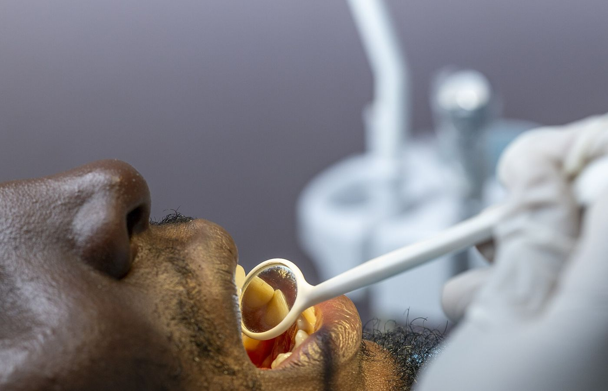
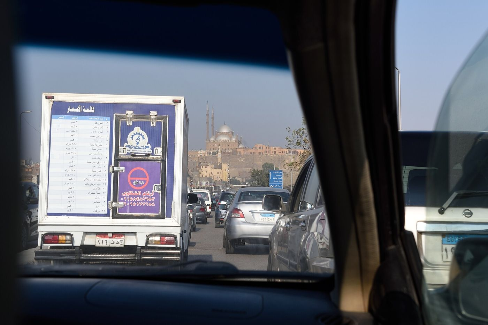
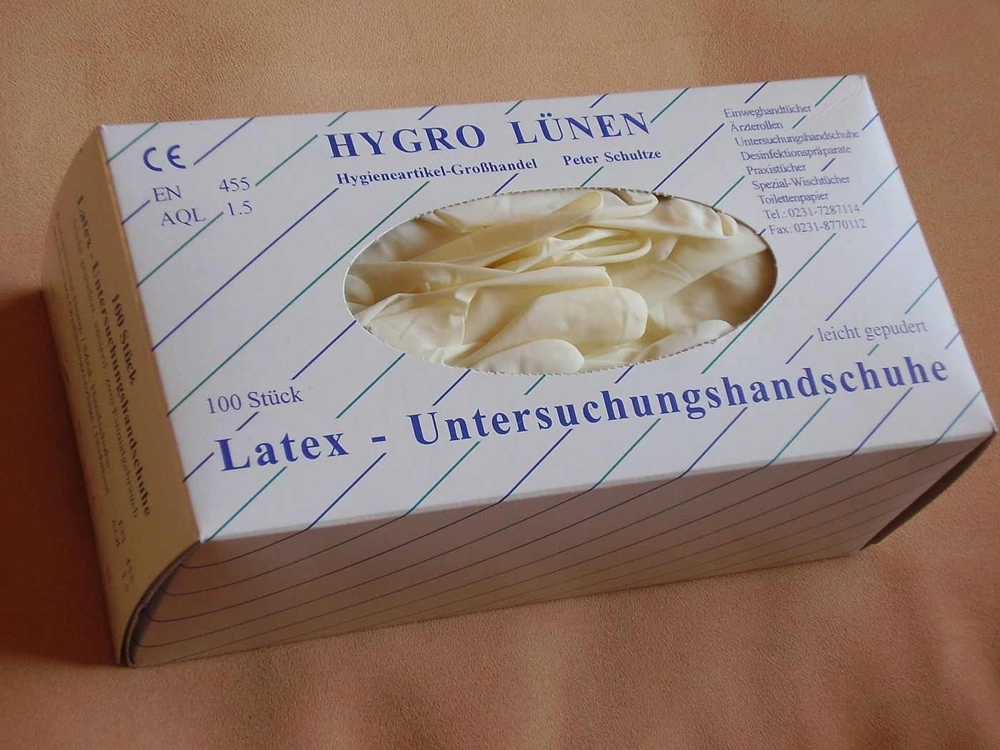
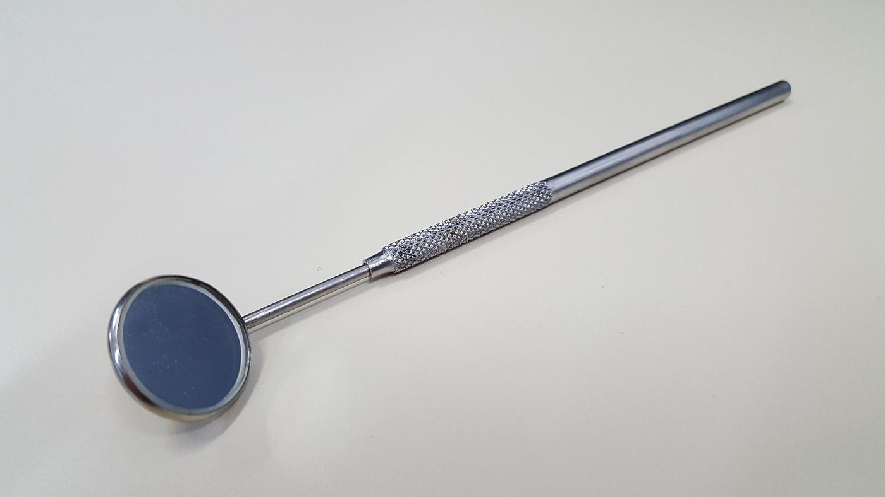
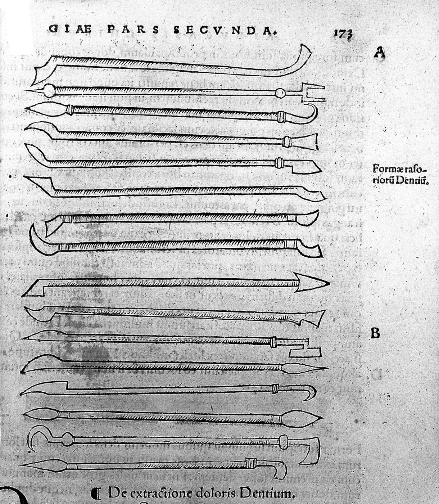
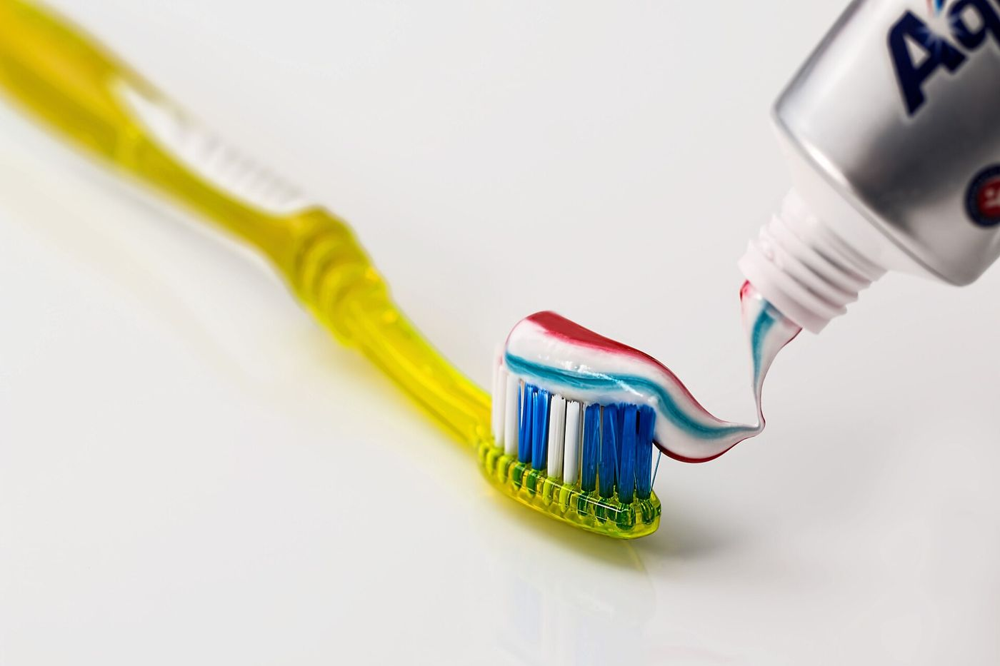

Greener dentistry for Egyptطب أسنان أخضر لمصر
A free tool that helps dental clinics measure and cut the carbon and plastic behind every visit.أداة مجانية تساعد عيادات الأسنان على قياس الكربون والبلاستيك وراء كل زيارة وخفضهما.
Every check-up leaves a trace: the car trip   
Where the carbon goesأين تذهب الانبعاثات؟
of dentistry's carbon comes from patients and staff travelling to the clinic. In England that is part of 675,000 tonnes of CO₂e a year.من انبعاثات طب الأسنان تأتي من تنقّل المرضى والعاملين إلى العيادة، ضمن ٦٧٥ ألف طن من مكافئ ثاني أكسيد الكربون سنويًا في إنجلترا.
Duane et al. (2017)
single-use plastic items, about 354 g, thrown away with every dental procedure.قطعة بلاستيك أحادية الاستخدام (نحو ٣٥٤ جرامًا) تُرمى مع كل إجراء علاجي.
Martin et al. (2022)
of 302 Egyptian dentists have poor green practices, though 99.7% support the idea.من ٣٠٢ طبيب أسنان مصري ممارساتهم ضعيفة، رغم تأييد ٩٩٫٧٪ للفكرة.
Abdelgawad et al. (2025)
Your clinic in the mirrorعيادتك في المرآة
Enter rough monthly numbers. Everything is worked out in your browser; nothing is sent anywhere.أدخل أرقامًا شهرية تقريبية. تتم كل الحسابات داخل المتصفح ولا تُرسل أي بيانات.
What if you…ماذا لو…
Method: car CO₂ uses 8.82 kg CO₂ per gallon at 25 mpg (about 0.219 kg/km), as in Danesh et al. (2025). Plastic uses 21 items and 354 g per procedure (Martin et al., 2022). *The total assumes travel is 64.5% of a dental service's footprint (Duane et al., 2017); it is an estimate, not an audit.طريقة الحساب: انبعاثات السيارة = ٨٫٨٢ كجم ثاني أكسيد كربون لكل جالون بمعدل ٢٥ ميلًا للجالون (نحو ٠٫٢١٩ كجم/كم) كما في Danesh et al. (2025). البلاستيك = ٢١ قطعة و٣٥٤ جرامًا لكل إجراء (Martin et al., 2022). *البصمة الكلية تفترض أن التنقّل يمثل ٦٤٫٥٪ من بصمة خدمات الأسنان (Duane et al., 2017)، وهي تقدير وليست تدقيقًا.
Green clinic checklistقائمة العيادة الخضراء
Tick what your clinic already does; every step comes from published research. Training works: one program raised Egyptian dental students' knowledge from 60% to 93%.ضع علامة على ما تطبّقه عيادتك بالفعل، فكل خطوة مبنية على بحث منشور. والتدريب ينجح: رفع برنامج واحد معرفة طلاب طب الأسنان المصريين من ٦٠٪ إلى ٩٣٪.

For patientsللمرضى
A healthy smile can be kind to the planet too. Five habits, from the most important to the easiest.يمكن لابتسامتك الصحية أن تكون رفيقة بالكوكب أيضًا. خمس عادات، من الأهم إلى الأسهل.
Prevent firstالوقاية أولًا
Brush twice a day with fluoride toothpaste and cut sugary snacks. Every treatment you avoid saves trips, materials and money.نظّف أسنانك مرتين يوميًا بمعجون يحتوي على الفلورايد وقلّل السكريات. كل علاج تتجنّبه يوفّر رحلات ومواد ومالًا.

Fewer visitsزيارات أقل
Ask your dentist to combine treatments in one appointment and use online follow-ups. 101 online visits saved 4,875 kg of CO₂ in one study.اطلب من طبيبك دمج العلاجات في موعد واحد واستخدم المتابعة عبر الإنترنت. في إحدى الدراسات وفّرت ١٠١ زيارة عن بُعد ٤٬٨٧٥ كجم من ثاني أكسيد الكربون.
Greener tripرحلة أنظف
Travel is about 65% of dentistry's carbon. Walk, share a ride or take public transport to your clinic.التنقّل يمثّل نحو ٦٥٪ من انبعاثات طب الأسنان. امشِ أو شارك الرحلة أو استخدم المواصلات العامة.
Smarter brushفرشاة أذكى
A manual brush with a replaceable head has one of the lowest footprints; electric brushes had the highest in a life-cycle study.الفرشاة اليدوية ذات الرأس القابل للتغيير من أقل الخيارات أثرًا، بينما كانت الكهربائية الأعلى أثرًا في دراسة دورة الحياة.
Ask your clinicاسأل عيادتك
Ask whether they use reusable instruments and recycle. When patients ask, clinics change.اسأل إن كانت تستخدم أدوات قابلة لإعادة الاستخدام وتعيد التدوير. حين يسأل المرضى تتغيّر العيادات.
The researchالمراجع
Every number on this page comes from these peer-reviewed studies (APA 7).كل رقم في هذه الصفحة مأخوذ من هذه الدراسات المحكّمة (APA 7).
- Abdelgawad, F., Mosallam, O., & Wassef, N. (2025). Assessment of knowledge, attitude and practices regarding green eco-friendly dentistry among dentists: A cross-sectional study. Egyptian Dental Journal, 71(1), 109–120. https://doi.org/10.21608/edj.2024.339201.3274
- Bishr, E. M., Hussein, M. F., Ismail, G. A., Fetohy, E. M., & El-Zoka, A. H. (2026). Effectiveness of an educational program on improving the knowledge and practice of environmental sustainability in dentistry among undergraduate students at Faculty of Dentistry in Egypt: An interventional study. BMC Medical Education, 26, Article 143. https://doi.org/10.1186/s12909-025-08137-z
- Borglin, L., Pekarski, S., Saget, S., & Duane, B. (2021). The life cycle analysis of a dental examination: Quantifying the environmental burden of an examination in a hypothetical dental practice. Community Dentistry and Oral Epidemiology, 49(6), 581–593. https://doi.org/10.1111/cdoe.12630
- Byrne, D., Saget, S., Davidson, A., Haneef, H., Abdeldaim, T., Almudahkah, A., Basquille, N., Bergin, A. M., Prida, J., Lyne, A., & Duane, B. (2022). Comparing the environmental impact of reusable and disposable dental examination kits: A life cycle assessment approach. British Dental Journal, 233(4), 317–325. https://doi.org/10.1038/s41415-022-4912-4
- Danesh, D. O., Luca, J., Kalady, S. E., Townsend, J. A., Hammersmith, K. J., & Meyer, B. D. (2025). The impact of teledentistry on travel distance and carbon emissions at a children's hospital. The Journal of the American Dental Association, 156(2), 144–150. https://doi.org/10.1016/j.adaj.2024.11.007
- Duane, B., Berners Lee, M., White, S., Stancliffe, R., & Steinbach, I. (2017). An estimated carbon footprint of NHS primary dental care within England. How can dentistry be more environmentally sustainable? British Dental Journal, 223(8), 589–593. https://doi.org/10.1038/sj.bdj.2017.839
- Duane, B., Stancliffe, R., Miller, F. A., Sherman, J., & Pasdeki-Clewer, E. (2020). Sustainability in dentistry: A multifaceted approach needed. Journal of Dental Research, 99(9), 998–1003. https://doi.org/10.1177/0022034520919391
- Lyne, A., Ashley, P., Saget, S., Porto Costa, M., Underwood, B., & Duane, B. (2020). Combining evidence-based healthcare with environmental sustainability: Using the toothbrush as a model. British Dental Journal, 229(5), 303–309. https://doi.org/10.1038/s41415-020-1981-0
- Martin, N., Mulligan, S., Fuzesi, P., & Hatton, P. V. (2022). Quantification of single use plastics waste generated in clinical dental practice and hospital settings. Journal of Dentistry, 118, Article 103948. https://doi.org/10.1016/j.jdent.2022.103948
- Martin, N., Sheppard, M., Gorasia, G., Arora, P., Cooper, M., & Mulligan, S. (2021a). Awareness and barriers to sustainability in dentistry: A scoping review. Journal of Dentistry, 112, Article 103735. https://doi.org/10.1016/j.jdent.2021.103735
- Martin, N., Sheppard, M., Gorasia, G., Arora, P., Cooper, M., & Mulligan, S. (2021b). Drivers, opportunities and best practice for sustainability in dentistry: A scoping review. Journal of Dentistry, 112, Article 103737. https://doi.org/10.1016/j.jdent.2021.103737